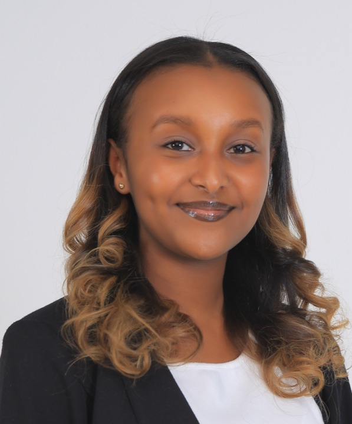

The first performance characterization of seven ORAM schemes for secure enclave applications, with a model for picking the best scheme per application.

Sitota Ezra Mersha
Ph.D. Student, Computer Science & Engineering
University of Michigan
I am a Ph.D. student at the University of Michigan, advised by Prof. Ronald G. Dreslinski Jr. I work on computer architecture, with a focus on memory systems and hardware–software co-design for privacy: making oblivious memory and oblivious retrieval fast enough to use in practice. I am also interested in using machine learning to speed up hardware design and simulation.
Before Michigan, I earned a B.S. in Software Engineering from Addis Ababa Institute of Technology and worked as a software engineer at CIMMYT and ILRI.
Publications
ForeSight: Prescient Prefetching in Disaggregated Memory
Under reviewA hardware–software co-design that turns the static memory access patterns of data-oblivious programs into a page prefetch schedule for disaggregated memory. I designed and implemented the ForeSight prefetch accelerator, which delivers a 4–54× speedup over LRU page replacement with under 0.1% area overhead.
Research
Starling
Fall 2026 – presentHardware–software co-design to make oblivious retrieval practical for retrieval-augmented generation (RAG) over sensitive data, at interactive latency and scale.
Learned Microarchitectural Warm-Up for Fast Design Space Exploration
Summer 2026 – presentLearned models of microarchitectural state as a faster alternative to repeated simulator warm-up, so design space exploration can evaluate far more CPU designs at gem5 accuracy.
ML for Maintaining Obsolete Digital Systems
2025 – 2026An LLM-agent system that engineers drop-in RTL replacements for failing, obsolete components in high-reliability systems. I built the testing infrastructure and RTL design library and benchmarked LLMs on RTL generation; structured prompts improved RISC-V pipeline correctness by 44–50%. Presented as From Prompt to Processor at the DAC 2025 Young Fellows poster session.
Selected Projects
Improving APT-GET via Distance Correction, Locality Control, and Intra-Loop Prefetching
EECS 583Extended the APT-GET LLVM software prefetcher with capacity-aware distance tuning, per-load distances and cache locality, and intra-loop prefetching, reaching up to 1.33× speedup over APT-GET on graph workloads.
Batching and Request Aggregation for LLM Inference on CPUs
CSE 585Implemented request aggregation and batching in llama.cpp, reducing response time by 20%.
Experience
-
Graduate Student Instructor, University of MichiganEECS 270: Introduction to Logic Design2026 – present
-
Full-Stack Developer and Consultant, CIMMYTDesigned a scalable learning management system; query optimizations cut latency by 25%.2023 – 2024
-
Software Engineer, International Livestock Research InstituteBuilt a mobile app and web dashboard that cut manual workflows by 80% for 500+ users.2022 – 2023
-
Undergraduate Research Intern, University of MichiganWith Prof. Valeria Bertacco through the AURA program.Summer 2022
Education
-
Ph.D., Computer Science and Engineering, University of Michigan2024 – 2029 (expected)
-
B.S., Software Engineering, Addis Ababa Institute of Technology2018 – 2023
Awards & Honors
- DAC Young Fellows Contest, Top 12 Winner2025
- DAC Young Fellow, Design Automation Conference2025
- Very Great Distinction, Addis Ababa Institute of Technology2023
Service & Mentoring
-
Mentor, Emerging Leaders in AI Grad Prep Program, Black in AI2024 – present
- Review application materials and lead mentoring discussions for grad school applicants.
-
Research Mentor, African Undergraduate Research AdventureSummer 2023